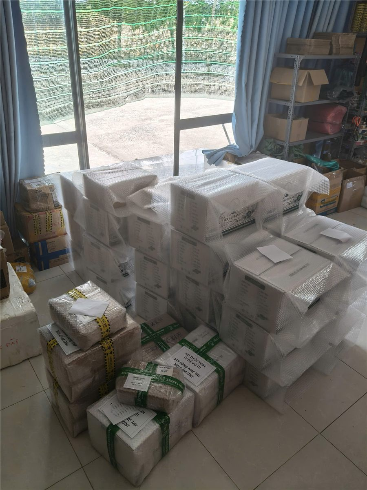
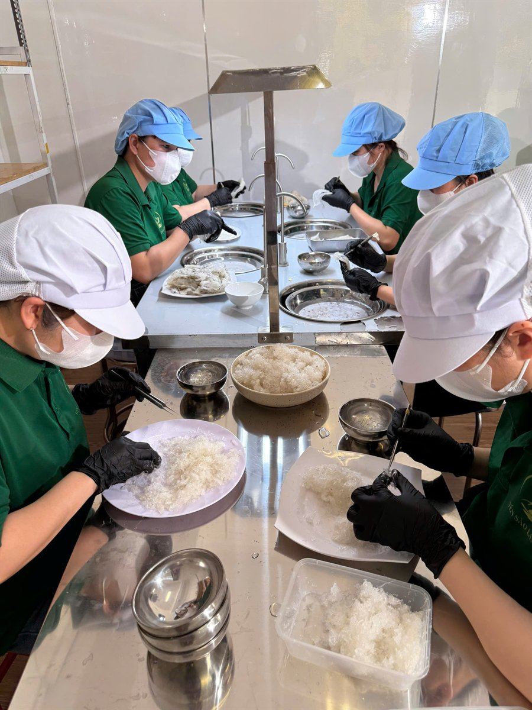

Top 7 Tiêu Chí Chọn Hãng Yến Sào Chất Lượng Tại Khánh Hòa
Yến Sào Lanest · Đăng ngày 01/11/2026

Gõ "top yến sào Khánh Hòa" lên mạng, anh chị sẽ gặp rất nhiều bảng xếp hạng. Nhưng một bảng xếp hạng chỉ đúng khi người xếp đã thật sự cân, ngâm, kiểm nghiệm hàng của từng hãng. Vì vậy bài này không xếp hạng ai. Thay vào đó là 7 tiêu chí mà người làm nghề yến ở Khánh Hòa dùng để đánh giá một hãng yến sào chất lượng, để anh chị tự áp dụng với bất kỳ hãng nào, kể cả Lanest.
Kho hàng của Yến Sào Lanest tại Khánh Hòa
1. Nói rõ được yến lấy từ đâu
Hãng làm thật trả lời được ngay: yến từ nhà yến nào, vùng nào, sơ chế ra sao. Tổ yến thô Lanest dùng được thu hoạch từ các nhà yến ven biển miền Trung, chủ yếu Khánh Hòa, Bình Định, Phú Yên, Ninh Thuận và Bình Thuận, sơ chế thủ công, không tẩy trắng, không ngâm hóa chất, sấy khô tự nhiên.
2. Làm sạch bằng tay và có người kiểm lại
Yến tinh chế đẹp hay xấu nằm ở khâu nhặt lông. Nên hỏi: ai nhặt, có ai kiểm lại không. Ở Lanest, mỗi mẻ yến tinh chế đi qua 4 chốt: thợ nhặt, thợ đảo lại, thợ đắp, nhân viên kiểm tra cuối rồi mới đóng hộp; kèm ba điều không làm là không tẩy trắng, không độn tăng trọng lượng, không "chữa" hàng không đạt.

Thợ Lanest nhặt lông yến bằng tay
3. Đủ cân khi ngâm và sấy lại
Đây là cách thử đơn giản nhất mà ít người làm: ngâm nở rồi sấy khô lại để cân. Người sáng lập Lanest từng làm đúng việc này với 100g yến tinh chế nhập từ một đối tác, và chỉ còn 84g. Từ lần đó Lanest có đội thợ riêng từ năm 2023. Một hãng tự tin vào hàng của mình sẽ không ngại khách tự cân lại.
4. Màu và sợi yến: hiểu đúng để không chọn nhầm
Theo trang tổng quan yến sào của Lanest, yến thật thơm nhẹ tự nhiên, sợi dai và rõ, ngâm nở từ từ, chưng xong nước trong. Yến pha trộn thì mùi hắc hoặc không mùi, sợi bở, ngâm nở nhanh bất thường và nhũn, chưng xong nước đục.
Về màu, người sáng lập Lanest giải thích cho đội làm hàng rằng màu kem hay cam vàng nhạt là đặc tính tự nhiên của một số loại yến, tổ già cũng có thể ngả vàng. Chỉ khi chuyển hẳn sang vàng đậm hay đỏ mới là dấu hiệu hỏng. Hãng chạy theo màu trắng tinh bằng mọi giá là điều nên dè chừng.
5. Kiểm nghiệm định kỳ và hồ sơ đầy đủ
Một tờ kiểm nghiệm chỉ nói về mẫu gửi hôm đó. Hãng chất lượng kiểm nghiệm đều. Người sáng lập Lanest cho biết:
"Nhiều bên đóng cửa nhưng bên chị vẫn duy trì được vì hàng tháng đều tự gửi mẫu đi kiểm nghiệm thật."
Kèm theo là hồ sơ pháp lý: Lanest có ISO 22000:2018 (hiệu lực đến 23/09/2027), bản tự công bố cho nhiều sản phẩm, mã vạch GS1, và mẫu Yến Sào Tinh Chế Lanest kiểm tại AVATEK cho kết quả đạm 62,7%, không phát hiện Salmonella, không phát hiện kim loại nặng.
6. Nhãn ghi rõ lượng yến thật
Với yến hũ, nhìn nhãn là biết hãng có minh bạch không. Nhãn nên ghi rõ lượng yến trong hũ. Ví dụ ở Lanest: dòng yến hũ ghi 7g yến tươi mỗi hũ; dòng tổ yến chưng nguyên chất 100% ghi 1,5g tổ yến, tương đương 15g yến tươi mỗi hũ. Hãng nào chỉ ghi chung chung "có yến" thì nên hỏi thêm.
7. Hóa đơn, đổi trả và phản hồi của khách thật
Cuối cùng, xem hãng có chịu trách nhiệm sau khi bán không: có xuất hóa đơn, có chính sách đổi trả thành văn, có dám hỏi khách đánh giá. Lanest xuất hóa đơn đầy đủ, nhận đổi trả hàng lỗi do vận chuyển hoặc do nhà sản xuất trong 15 ngày kể từ ngày nhận. Đợt khảo sát khách hàng cuối tháng 8/2026, phần lớn là đại lý và khách sỉ, chấm Lanest từ 4,48 đến 4,76 trên 5 điểm cho chất lượng, đóng gói, hình ảnh, thái độ và chăm sóc khách.
Tóm tắt 7 tiêu chí
| Tiêu chí | Câu nên hỏi hãng |
|---|---|
| Nguồn yến | Yến lấy từ đâu, sơ chế thế nào? |
| Làm sạch | Ai nhặt, ai kiểm lại, có tẩy trắng không? |
| Đủ cân | Ngâm, sấy lại có hụt bất thường không? |
| Màu, sợi | Sợi dai, mùi tự nhiên, không trắng bất thường? |
| Kiểm nghiệm | Có phiếu kiểm nghiệm, bao lâu kiểm một lần? |
| Nhãn | Ghi rõ bao nhiêu gram yến? |
| Sau bán | Có hóa đơn, đổi trả, khảo sát khách không? |
Muốn đi sâu phần nhận biết bằng mắt, xem bài phân biệt yến sào thật giả và cách chọn mua yến sào.
Câu hỏi thường gặp
Yến sào Khánh Hòa hãng nào tốt nhất?
Không có câu trả lời chung cho mọi người. Cách chắc chắn nhất là áp 7 tiêu chí trên với từng hãng anh chị đang cân nhắc, và tự ngâm, cân thử lô đầu tiên.
Yến trắng tinh có phải yến tốt hơn không?
Không hẳn. Màu kem, cam vàng nhạt là đặc tính tự nhiên của một số loại yến. Nên dè chừng yến trắng bất thường.
Tôi muốn xem hồ sơ kiểm nghiệm của Lanest thì liên hệ ở đâu?
Anh chị gọi 0258 6278 627 hoặc nhắn fanpage Yến Sào Lanest để được gửi chứng nhận và kết quả kiểm nghiệm.